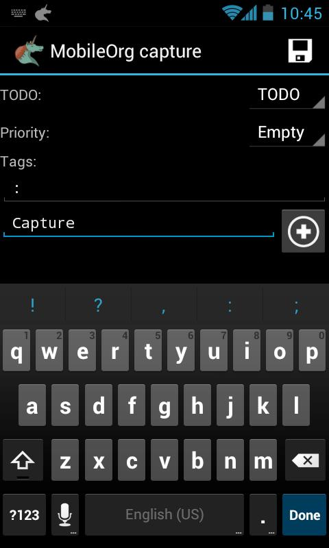
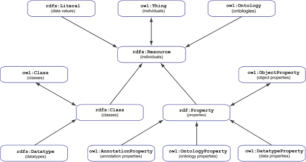

|  | Mobile Org for AndroidMany code examples use org-mode syntax. Mobile Org provides portability of this org-mode markup for Android, and Apple devices. Example files can be added to Mobile Org repositories as plugins and packages. Homepage : https://play.google.com/store/apps/details?id=com.matburt.mobileorg&hl=en |
RDF framework for GNU Emacs
|  | MX-RDF is a framework library for GNU Emacs. The library includes a
set of tools, definitions and tests for working with RDF data
programmatically in Elisp using RDF
http://www.w3.org/TR/rdf11-concepts/ Notation 3 Turtle http://www.w3.org/TeamSubmission/turtle/ and OWL2 http://www.w3.org/TR/owl-overview/ |
Source Code Repositories
My public source code repositories are located at github, along with the source code for this site.